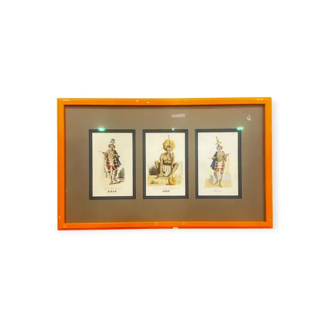
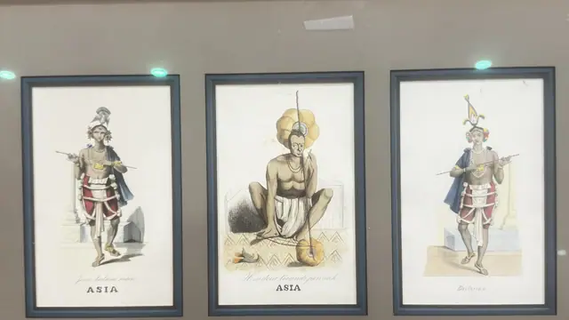

Paintings & Prints
Three Hand-Coloured Asia Costume Plates, Framed
· mid 19th century
Price Upon Request


About the Item
Three separate hand-coloured plates, each individually mounted in a slim black frame and grouped behind a taupe mount in one large lacquered surround. Left and right show standing male dancers in plumed helmets and blue cloaks over red and white striped skirts, holding long staffs; the centre plate shows a seated ascetic with a great fan-shaped ochre headdress on a patterned mat. Colouring is light and transparent - carmine, ochre, indigo and flesh - over fine engraved outlines on cream paper, with engraved captions in italic script and the word ASIA beneath two of them. Medium: hand-coloured engraving or lithograph on paper. Inscribed on the reverse or mount: ASIA; ASIA; Bailarina. Condition: Paper is lightly toned with a warm cream tone overall; no tears or foxing visible at this resolution. Two small bright reflections on the glass; the orange frame has minor surface marks.
Details
- Creation Year:
- mid 19th century
- Dimensions:
- Height: 16.5 in (41.91 cm)
Width: 27.5 in (69.85 cm)
outside of frame - Medium:
- hand-coloured engraving or lithograph on paper
- Period:
- 19Th
- Condition:
- Offered in the condition shown in the photographs.
- Reference Number:
- VO-249
- Documentation:
- no certificate photographed
- Gallery Location:
- ASIA; ASIA; Bailarina